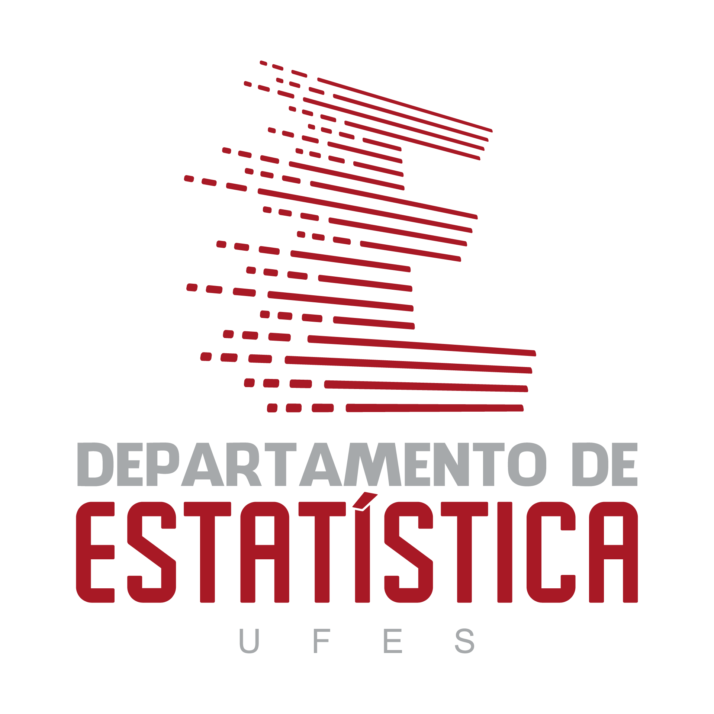

Evento Inscrições Submissão de trabalhos Programação Local Contato
É com grande entusiasmo que o Departamento de Estatística tem o prazer de anunciar a realização da XV Semana de Estatística, um evento científico dedicado a promover o conhecimento e a discussão de diversos temas relevantes na área da estatística. Este evento, que já se tornou uma tradição em nosso departamento, tem como objetivo principal oferecer um espaço de intercâmbio de  ideias e experiências entre estudantes, pesquisadores e profissionais da área estatística, bem como para a comunidade em geral interessada em conhecer mais sobre esse campo tão importante e em constante evolução. Durante esta edição serão abordados uma ampla gama de tópicos, incluindo métodos estatísticos avançados, aplicações práticas da estatística em diversas áreas do conhecimento, como saúde, economia, meio ambiente, entre outros, além de discussões sobre tendências e desafios futuros da área. Nossos palestrantes e convidados especiais são renomados profissionais e pesquisadores, trazendo consigo uma expertise vasta e diversificada, que certamente enriquecerá os debates e contribuirá para o aprofundamento do conhecimento de todos os participantes. Além das palestras e mesas-redondas, a XV Semana de Estatística também contará com apresentações de trabalhos científicos, minicursos, workshops e outras atividades interativas, proporcionando uma experiência completa e enriquecedora para os participantes. Portanto, convidamos a todos os interessados a participarem deste importante evento, que será realizado de 6 a 8 de novembro de 2024 no auditório do Centro de Ciências Exatas da Universidade Federal do Espírito Santo. Não perca esta oportunidade única de se atualizar, aprender e trocar experiências na área da Estatística. Contamos com a sua presença!
É com grande prazer que convidamos vocês a participarem da XV Semana de Estatística, um evento imperdível para todos os interessados em ampliar seus conhecimentos e explorar as mais recentes tendências e desenvolvimentos na área da Estatística. Durante os dias do evento, serão oferecidas palestras, mesas redondas e minicursos conduzidos por renomados profissionais e pesquisadores da área. Essas atividades proporcionarão uma oportunidade única de aprendizado e networking, além de promoverem discussões importantes sobre os desafios e oportunidades enfrentados pela Estatística nos dias de hoje. É importante ressaltar que as vagas para os minicursos são limitadas, portanto, recomendamos que vocês se inscrevam o mais rápido possível para garantir sua participação. Além disso, para aqueles que desejam aproveitar o desconto oferecido nas inscrições, é necessário observar os prazos estabelecidos para o pagamento das taxas de inscrição. Não percam a chance de participar deste evento enriquecedor e inspirador. Junte-se a nós na XV Semana de Estatística e contribua para o avanço do conhecimento e da prática estatística em nossa comunidade acadêmica.
Atividade |
Período |
|---|---|
| Inscrições | 02/05/2024 a 04/11/2024 |
| Pagamento da inscrição: 1° Lote | 03/06/2024 a 01/09/2024 |
| Pagamento da inscrição: 2° Lote | 02/09/2024 a 04/11/2024 |
| Submissão de trabalhos | 20/05/2024 a 02/08/2024 |
| Notificação de aceite dos trabalhos | 06/09/2024 |
| Realização do evento | 06/11/2024 a 08/11/2024 |
Categoria |
Valor |
|
|---|---|---|
1° Lote |
2° Lote |
|
| Estudante graduação | ||
| Estudante pós-graduação | ||
| Profissional | ||
Temos o prazer de convidá-los a submeterem seus trabalhos para apresentação na XV Semana de Estatística, um evento renomado que promove o intercâmbio de conhecimento e o avanço da Estatística e áreas correlatas. Neste ano, oferecemos a oportunidade de apresentar seus trabalhos no formato de comunicação oral e/ou pôster, permitindo que você compartilhe suas pesquisas, resultados e experiências com a comunidade acadêmica e profissional. Os trabalhos submetidos devem abordar temas relevantes para a Estatística e áreas afins, como metodologias estatísticas, análise de dados, modelagem estatística, entre outros. Seja um artigo original, um relato de experiência ou um resumo expandido, estamos ansiosos para receber suas contribuições e enriquecer ainda mais o programa científico da XV Semana de Estatística. Não perca esta oportunidade de destacar sua pesquisa, ampliar sua rede de contatos e contribuir para o avanço do conhecimento na área da Estatística. Submeta seu trabalho agora e faça parte deste importante evento! Os manuscritos devem ser submetidos para avaliação no formato PDF e encaminhados, juntamente com os arquivos editáveis, por meio do e-mail sest@gmail.com. Serão considerados para análise apenas os trabalhos que estejam em conformidade com a formatação exigida e que sejam enviados dentro do prazo estabelecido. Cabe ressaltar que os autores devem realizar o pagamento da taxa de inscrição, respeitando os prazos estabelecidos, para que o trabalho seja incluído na programação do evento.